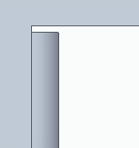
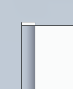
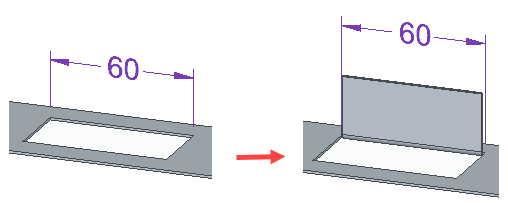
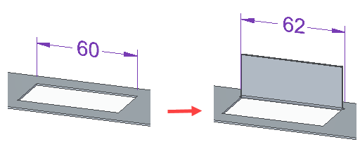

General tab (Multi-Edge Flange Options dialog box)
- Bend Radius
-
Specifies the bend radius value for the feature you are constructing. You can clear the Use default value option to type a different value for the depth.
- Bend Relief
-
Specifies that you want to apply bend relief to the tab/flange from which the flange is constructed. When you set this option, you can also specify whether the bend relief is round or square.
- Square
-
Specifies that the internal corners of the bend relief are square.
- Round
-
Specifies that the internal corners of the bend relief are round.
- Depth
-
Specifies the depth of the bend relief. You can clear the Use default value option to type a different value for the depth.
- Width
-
Specifies the width of the bend relief. You can clear the Use default value option to type a different value for the width.
- Neutral Factor
-
Specifies the neutral factor for the bend. You can clear the Use default value option to type a different value for the neutral factor.
- Extend Relief
-
Specifies that you want to apply bend relief to the entire face when set.

When cleared, the bend relief is applied only to the material adjacent to the bend.

This option is useful when the flange you are constructing is recessed between adjacent faces.
- Include relief in width
-
Specifies that you want the flange width to maintain the cutout dimension when set.

When cleared, the bend relief is added to the width of the cutout dimension.

- Corner Relief
-
Specifies that you want to apply corner relief to flanges that are adjacent to the flange you are constructing. When you set this option, you can also specify how you want the corner relief applied.
- Bend Only
-
Specifies that corner relief is only applied to the bend portion of the adjacent flanges.

- Bend and Face
-
Specifies that corner relief is applied to both the bend and face portions of the adjacent flanges.

- Bend and Face Chain
-
Specifies that corner relief is applied to the entire chain of bends and faces of the adjacent flanges.